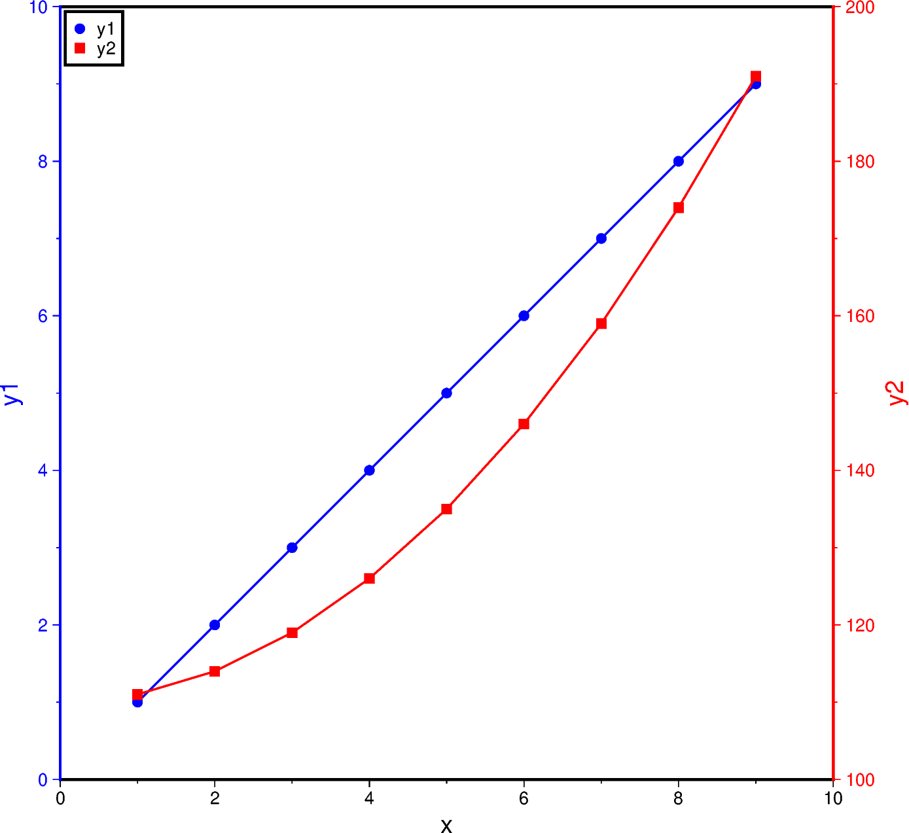

Note
Go to the end to download the full example code
Double Y axes graph
The frame parameter of the plotting methods of the pygmt.Figure
class can control which axes should be plotted and optionally show annotations,
tick marks, and gridlines. By default, all 4 axes are plotted, along with
annotations and tick marks (denoted W, S, E, N). Lower case
versions (w, s, e, n) can be used to denote to only plot the
axes with tick marks. We can also only plot the axes without annotations and
tick marks using l (left axis), r (right axis), t (top axis),
b (bottom axis). When frame is used to change the frame settings, any
axes that are not defined using one of these three options are not drawn.
To plot a double Y-axes graph using PyGMT, we need to plot at least two base maps separately. The base maps should share the same projection parameter and x-axis limits, but different y-axis limits.
import numpy as np
import pygmt
# Generate two sample Y data from one common X data
x = np.linspace(1.0, 9.0, num=9)
y1 = x
y2 = x**2 + 110
fig = pygmt.Figure()
# Plot the common X axes
# The bottom axis (S) is plotted with annotations and tick marks
# The top axis (t) is plotted without annotations and tick marks
# The left and right axes are not drawn
fig.basemap(region=[0, 10, 0, 10], projection="X15c/15c", frame=["St", "xaf+lx"])
# Plot the Y axis for y1 data
# The left axis (W) is plotted with blue annotations, ticks, and label
with pygmt.config(
MAP_FRAME_PEN="blue",
MAP_TICK_PEN="blue",
FONT_ANNOT_PRIMARY="blue",
FONT_LABEL="blue",
):
fig.basemap(frame=["W", "yaf+ly1"])
# Plot the line for y1 data
fig.plot(x=x, y=y1, pen="1p,blue")
# Plot points for y1 data
fig.plot(x=x, y=y1, style="c0.2c", fill="blue", label="y1")
# Plot the Y axis for y2 data
# The right axis (E) is plotted with red annotations, ticks, and label
with pygmt.config(
MAP_FRAME_PEN="red",
MAP_TICK_PEN="red",
FONT_ANNOT_PRIMARY="red",
FONT_LABEL="red",
):
fig.basemap(region=[0, 10, 100, 200], frame=["E", "yaf+ly2"])
# Plot the line for y2 data
fig.plot(x=x, y=y2, pen="1p,red")
# Plot points for y2 data
fig.plot(x=x, y=y2, style="s0.28c", fill="red", label="y2")
# Create a legend in the top-left corner of the plot
fig.legend(position="jTL+o0.1c", box=True)
fig.show()
Total running time of the script: (0 minutes 0.208 seconds)